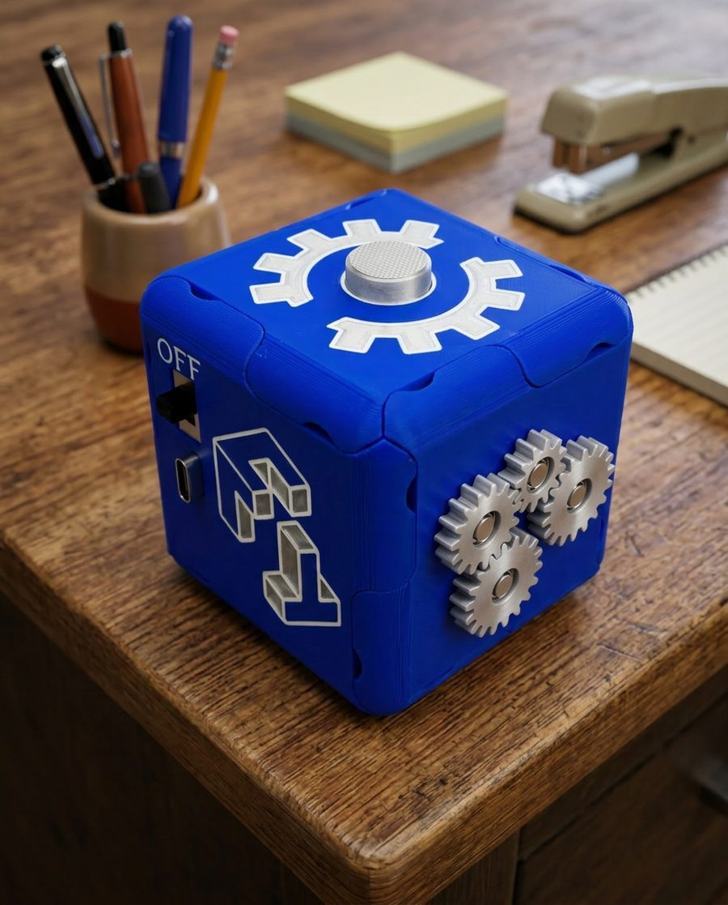
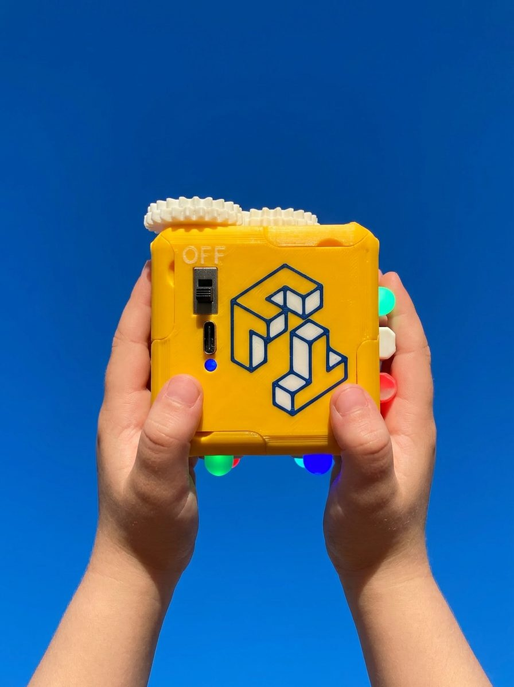

Modular faces
Mechanical and electrical faces were designed to be exchanged within one cube frame.
FidgiTech / Archived site
A preserved view of the original product-site structure: modular physical interactions, product variants, system components, and the founder story.

Why FidgiTech
Mechanical and electrical faces were designed to be exchanged within one cube frame.
The system combines tactile, visual, and auditory interactions.
The public site described collaboration with behavioral specialists and feedback from families.
Collection




The system
Puzzle, buzzer, RGB tuner, and latching-switch interactions were presented as electrical modules.
Gears, maze, slider, and spin-quad interactions were presented as mechanical modules.
The original site described one frame supporting a growing library of compatible faces.
Founder story
The archived site connected the project’s origin to a child’s fascination with a light switch, then described a sequence of prototyping, expert conversations, and feedback from families. This archive preserves the site’s information structure without retaining its mailing-list or sales flows.